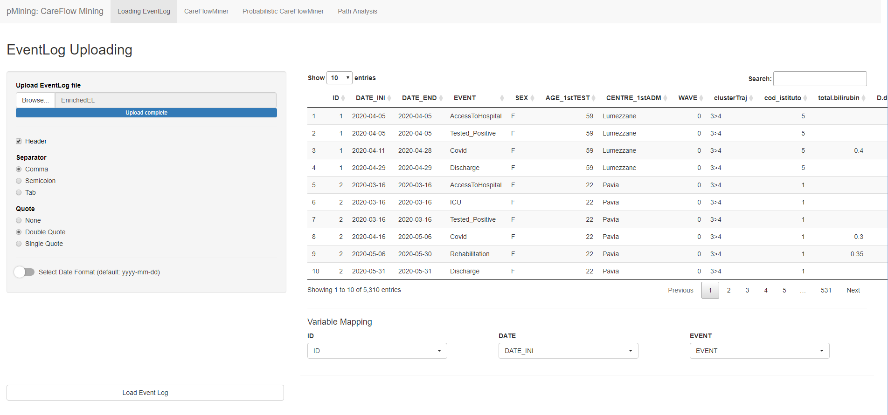
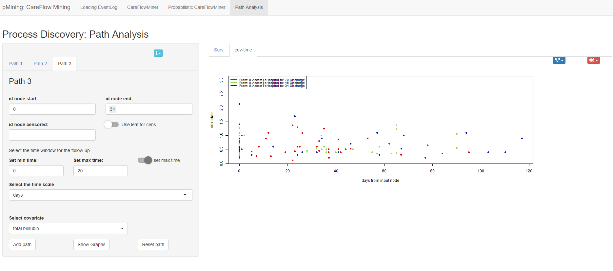
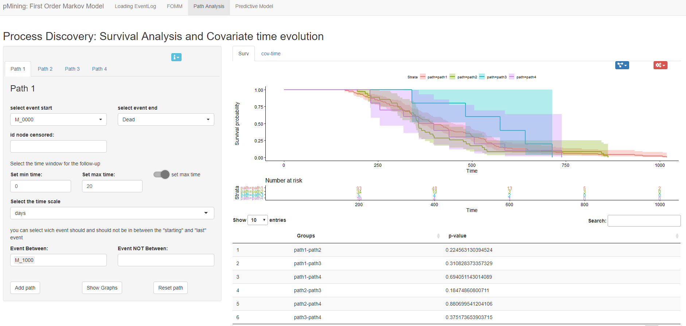
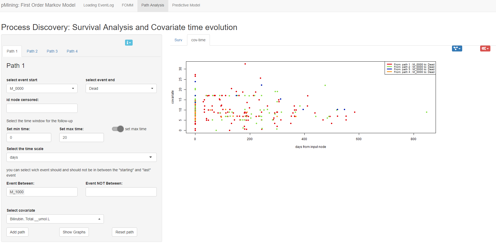
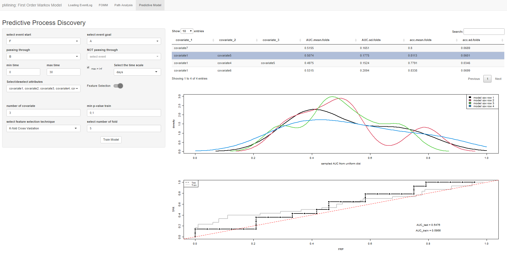

Chapter 3 Process Discovery Module:
3.1 “pMinShiny: Careflow Module”
The Carflow Mining module deals with the Process Discovery task. In this module it is possible to generate a process model from the Event Log the user uploads in the first section of the module.
Again, as seen in the previous chapter, the first step is to load an Event Log and make explicit the matches with ID, DATE, and EVENT.
Once the Event Log is loaded, it will be possible to access different sections which are dedicated to process discovery.

3.1.1 Careflow miner Section
The first section is the “Care Flow Miner” section, which shows care flow graph . This graph is the output of the care flow mining algorithm that is implemented in the pMiner package, of which this section is a graphical extension.
The user can change the algorithm parameters (support and depth) by acting on the spcific inputs. In addition, the user is also allowed to act on the type of displayed output .For example, using the appropriate switch it is possible to change the colors of the nodes so that they graphically express the median times required to reach that specific node. By using the other switch it is possible to graph leaf nodes even when the selected depth is lower than the maximum depth.
In this example, the depth parameter was set to 5 and the support to 15. The switches were set to show the medians of the times and the hidden leaves
Using the last switch,which is located at the bottom of the side bar, it is possible to access an additional feature of this section: the visualization of an inferential CFM graph. In fact, it is possible, through the appropriate inputs to split the population into two sub-cohorts according to the indicated variable and visualize how the CFM algorithm performs in the two sub-cohorts. The nodes colored in yellow are those for which there are significant differences between the two sub-cohorts.
It is possible to compare the two sub cohorts in terms of:
- the difference in patients passing through each node;
- the time taken to pass through a node;
- the probability of occurrence of a given future state.
In this case, it was chosen to stratify the population based on variable “SEX.” The nodes where there is a significant difference between the two groups (p value< 0.05) are highlighted
3.1.2 “Probabilistic CareFlow Miner” section
The third section of this module is the “Probabilistic CareFlow Miner” section. This section shows the same graph of the previous section to which is added the information regarding the probability of incurring in a certain future state. In this section the user has to explicit the parameters of the careflow mining algorithm (depth and support) and indicate the future state of interest. It’s also possible to highlighting nodes of interest through the selection of their label in the specific field.
In this case the probability of incurring in a “Subintensive” event is shown.
3.1.3 CFM: Path Analysis section
The last section of this module allows for path analysis. In particular, it is possible to perform and display the results of a Survival analysis (with Kaplan Meier) on the paths the user enters by filling in the input fields in the side bar. The comparisons between pairs of paths are expressed in terms of p-value (Log-rank test) and are shown into a table. It is also possible to see the time evolution of a covariate in all the different paths by clicking on the “cov-time” tab and selecting the covariate in the appropriate input that will appear in the side bar. It is necessary to press the “show graph” button to plot the graph.
Survival Analysis over 3 paths: all the paths started with the event “AccessToHospital” node 0, and ended with the event “Discharge” (node 70 for the first path, node 46 for the second path and 34 for the third path)
 In both tabs of the path analysis section, two buttons have been inserted that when clicked allow two panels to be displayed. The first one dedicated to displaying the model graph and the second one containing additional inputs that allow editing the graph in the tab. Regarding the survival analysis tab, it is possible to select whether to display the kaplan meiers of all selected paths or some of them.
panel for process model visualization
As for the tab detailing the covariates time trend, it is possible to change the plot displaied, by acting on:
- position of the legend;
- time unit;
- toggling the linear regression line;
- toggling the confidence intervals of the mean of the measures over a certain customizable time interval
panel for editing the visualization
3.2 “pMinShiny: FOMM Module”
This module deals with process discovery using the First Order Markov Model (FOMM).
3.2.1 FOMM graph section
The first section of the FOMM module shows the process model. The user can change the threshold on the probabilities of the transition from one node to the next, through the use of the appropriate input placed in the side bar. The user can also show or hide the autoloops by pressing the autoloops switch.
Please note that also the FOMM module uses the algorithms implemented in the pMineR package (see the FOMM class)
Example of process model computed using FOMM algorithm
3.2.2 FOMM: Path Analysis section
The path analysis section it performs the same tasks as the same section in the CFM module (see CFM: Path Analysis section ). An example of path analysis is given below:
 
3.2.3 FOMM: Predictive model section
The last section that makes up the FOMM module is devoted to learning a logistic regression model in order to be able to predict the achievement of a given outcome node from the value of certain patient covariates.
The user must specify:
- the starting event, at which the values of the covariates will be selected.
- the end node (event goal)
- any node in which it is desired that patients have or have not transited (passing through and not through)
- the minimum and maximum time to reach the end node
- which covariates to use in the learning
Using the appropriate input, it is possible to specify whether to use all selected covariates in the model or to make a feature selection from them. In addition, it is possible to choose whether to use the cross fold or the hold out technique.
Once all inputs are set it is possible to compute the logistic model by the Train model button. The output shown by this section are:
a matrix containing the covariates used by the model. In the case of feature selection, only the variables that have a p-value above the threshold chosen by the user in the appropriate input (min p-value train) will be shown; the AUC and accuracy values (in the case of cross fold validation, the mean and the standar deviations computed on the different folds are shown).
a plot representing the kernel density of AUCs calculated for each fold of the k fold cross validation
the ROC curves, test and training, related to a given configuration of covariates (row of the matrix described above)
